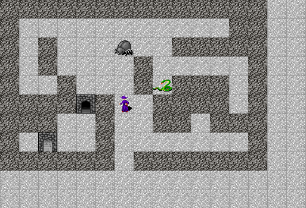
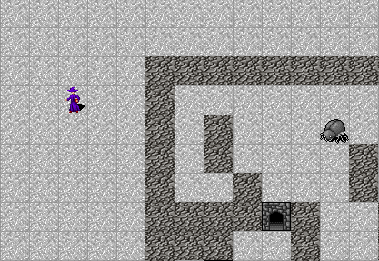

2018-04-02-haskell-rogue-like_09
Haskell roguelike - Viewport scrolling
Viewport scrolling
Current the game still allows the player to move off the screen, i.e. out of the viewport. Different roguelikes have different options for dealing with viewport scrolling. Rather than picking a single one I’m going to implement five of them and give the player the option of choosing at runtime which they like best.
Styles
The five viewport scrolling styles I’m implementing are
- Scroll: Scroll the viewport as the player moves. E.g. if you move one position off the screen to the right, the world moves one tile.
- Center: The player is locked in the center of the screen, the world moves around you
- Locked: Like centre but the point that the player is at need not be the centre of the screen.
- Snap centre: Once you move off the screen the viewport is snapped back to the centre.
- Border: There is a set number of tiles border. As you move into this border the screen scrolls.
This is what the center style looks like

and this is what a 2 tile border style looks like

Personally I find the center style to be too disconcerting. I’ve selected the two tile border as the default as I find this the most intuitive. Its advantage over a simple scroll style is that if there is tile that you can not move over just off the screen (e.g. a wall) then that tile gets scrolled into the viewport. With scroll this does not happen and so you have no idea what is impeding your movement.
Code
Lets start by defining a type for the different styles
09_viewport_scroll/src/GameCore.hs (72 to 77)
data ViewPortStyle = ViewPortCentre
| ViewPortLock PlayerPos
| ViewPortScroll
| ViewPortSnapCentre
| ViewPortBorder Int
deriving (Show, Eq)since the player is able to change view port style’s we’ll need an action
09_viewport_scroll/src/GameCore.hs (67 to 68)
plViewPortStyle stores the selected viewport style
09_viewport_scroll/src/GameCore.hs (34 to 39)
data Player = Player { _plConn :: !Host.Connection
, _plActor :: !Actor
, _plScreenSize :: !(Int, Int)
, _plWorldTopLeft :: !WorldPos
, _plViewPortStyle :: !ViewPortStyle
}mkPlayer in bootWorld is changed to select the default viewport style
09_viewport_scroll/src/GameEngine.hs (125 to 131)
mkPlayer =
Player { _plConn = conn
, _plScreenSize = screenSize
, _plWorldTopLeft = WorldPos (0, 0)
, _plActor = mkPlayersActor
, _plViewPortStyle = ViewPortBorder 2
}Keys
The shortcut keys for viewport style selection must be added. I’ve chosen a chord of shift-v _ where V means viewport and _ is the style to select.
09_viewport_scroll/src/GameEngine.hs (114 to 118)
, ("shift+v c", "Game:ViewPort:Centre")
, ("shift+v s", "Game:ViewPort:Scroll")
, ("shift+v p", "Game:ViewPort:Snap")
, ("shift+v b", "Game:ViewPort:Border")
, ("shift+v l", "Game:ViewPort:Lock")handleKeys is updated to handle the key commands
09_viewport_scroll/src/GameEngine.hs (335 to 339)
"Game:ViewPort:Centre" -> [ActSetPlayerViewPortStyle ViewPortCentre]
"Game:ViewPort:Scroll" -> [ActSetPlayerViewPortStyle ViewPortScroll]
"Game:ViewPort:Snap" -> [ActSetPlayerViewPortStyle ViewPortSnapCentre]
"Game:ViewPort:Border" -> [ActSetPlayerViewPortStyle $ ViewPortBorder 2]
"Game:ViewPort:Lock" -> [ActSetPlayerViewPortStyle $ ViewPortLock (worldCoordToPlayer topLeft $ actor ^. acWorldPos)]runAction simply updates the player’s current viewport style
09_viewport_scroll/src/GameEngine.hs (358 to 359)
The viewport logic
tryMoveActor calls updatePlayerViewport for each move.
09_viewport_scroll/src/GameEngine.hs (411 to 415)
-- | Update the player's view port
updatePlayerViewport :: World -> World
updatePlayerViewport w =
let p = w ^. wdPlayer in
w & wdPlayer .~ (p & plWorldTopLeft .~ calcViewPortTopLeft p)updatePlayerViewport is just updating the player’s top-left coordinate by calling calcViewPortTopLeft, which is where the core of this logic lives.
09_viewport_scroll/src/GameEngine.hs (420 to 473)
calcViewPortTopLeft :: Player -> WorldPos
calcViewPortTopLeft player =
let actor = player ^. plActor in
case player ^. plViewPortStyle of
-- These two styles put the player in the viewport, so no need to check
ViewPortCentre -> centreOn (player ^. plScreenSize) (actor ^. acWorldPos)
ViewPortLock focus -> focusOn focus $ actor ^. acWorldPos
_ ->
let tl@(WorldPos (tX, tY)) = (player ^. plWorldTopLeft) in
let sz@(width, height) = (player ^. plScreenSize) in
let (outX, outY) = distanceOutOfViewPort sz tl (actor ^. acWorldPos) in
case player ^. plViewPortStyle of
ViewPortSnapCentre ->
if outX /= 0 || outY /= 0
then centreOn (player ^. plScreenSize) (actor ^. acWorldPos)
else player ^. plWorldTopLeft
ViewPortBorder d ->
let (outX', outY') = distanceOutOfViewPort
(width - d - d, height - d - d)
(WorldPos (tX + d, tY - d))
(actor ^. acWorldPos)
in
WorldPos (tX + outX', tY + outY')
_ -> -- default to ViewPortScroll
WorldPos (tX + outX, tY + outY)
where
centreOn :: (Int, Int) -> WorldPos -> WorldPos
centreOn (screenWidth, screenHeight) (WorldPos (wAtX, wAtY)) =
let (sMidX, sMidY) = (screenWidth `div` 2, screenHeight `div` 2) in
WorldPos (wAtX - sMidX, wAtY + sMidY)
focusOn :: PlayerPos -> WorldPos -> WorldPos
focusOn (PlayerPos (focusX, focusY)) (WorldPos (atX, atY)) =
WorldPos (atX - focusX, atY + focusY)
distanceOutOfViewPort :: (Int, Int) -> WorldPos -> WorldPos -> (Int, Int)
distanceOutOfViewPort (screenWidth, screenHeight) (WorldPos (topX, topY)) (WorldPos (atX, atY)) =
let
x = if | atX < topX -> atX - topX
| atX >= topX + screenWidth -> atX - topX - screenWidth + 1
| otherwise -> 0
y = if | atY > topY -> atY - topY
| atY <= topY - screenHeight -> atY - (topY - screenHeight + 1)
| otherwise -> 0
in
(x, y)The lock and centre styles are the simplest. There is no need to check if there player is moving off the screen since the screen is always moved to keep the player at a position. So They just call centreOn or focusOn which calculate a top-left that keeps the player at the desired position.
09_viewport_scroll/src/GameEngine.hs (425 to 428)
case player ^. plViewPortStyle of
-- These two styles put the player in the viewport, so no need to check
ViewPortCentre -> centreOn (player ^. plScreenSize) (actor ^. acWorldPos)
ViewPortLock focus -> focusOn focus $ actor ^. acWorldPos09_viewport_scroll/src/GameEngine.hs (459 to 466)
centreOn :: (Int, Int) -> WorldPos -> WorldPos
centreOn (screenWidth, screenHeight) (WorldPos (wAtX, wAtY)) =
let (sMidX, sMidY) = (screenWidth `div` 2, screenHeight `div` 2) in
WorldPos (wAtX - sMidX, wAtY + sMidY)
focusOn :: PlayerPos -> WorldPos -> WorldPos
focusOn (PlayerPos (focusX, focusY)) (WorldPos (atX, atY)) =
WorldPos (atX - focusX, atY + focusY)scroll is also simple, we just update the top-left by the distance the player has moved out of the view port (see *distanceOutOfViewPort)
09_viewport_scroll/src/GameEngine.hs (453 to 454)
That leaves snap and border
09_viewport_scroll/src/GameEngine.hs (437 to 449)
case player ^. plViewPortStyle of
ViewPortSnapCentre ->
if outX /= 0 || outY /= 0
then centreOn (player ^. plScreenSize) (actor ^. acWorldPos)
else player ^. plWorldTopLeft
ViewPortBorder d ->
let (outX', outY') = distanceOutOfViewPort
(width - d - d, height - d - d)
(WorldPos (tX + d, tY - d))
(actor ^. acWorldPos)
in
WorldPos (tX + outX', tY + outY')snap checks if the player is off the screen and if so then snaps the view port to the centre of the screen.
border calculates if the player is off the border, where the border is the size of the screen minus twice the border size. Then scroll the screen, this means that the screen scrolls before the player gets to the edge.
Finally distanceOutOfView is the helper function that checks how many tiles the player has moved off the screen.
09_viewport_scroll/src/GameEngine.hs (471 to 482)
distanceOutOfViewPort :: (Int, Int) -> WorldPos -> WorldPos -> (Int, Int)
distanceOutOfViewPort (screenWidth, screenHeight) (WorldPos (topX, topY)) (WorldPos (atX, atY)) =
let
x = if | atX < topX -> atX - topX
| atX >= topX + screenWidth -> atX - topX - screenWidth + 1
| otherwise -> 0
y = if | atY > topY -> atY - topY
| atY <= topY - screenHeight -> atY - (topY - screenHeight + 1)
| otherwise -> 0
in
(x, y)Teleportation
You may be tempted to scroll the viewport based on the key pressed. However this usually is a problem later on when you start adding more features to the game. For example teleporters or any other device that moves the player more than a single tile would then require special logic. Its much simpler to simply calculate the viewport from where the player actually was moved to.
Chapters
Changes
src/GameCore.hs
diff -w -B -a -d -u -b --new-file 08_layers/src/GameCore.hs 09_viewport_scroll/src/GameCore.hs
--- 08_layers/src/GameCore.hs
+++ 09_viewport_scroll/src/GameCore.hs
@@ -30,12 +30,15 @@
, _acStdGen :: !Rnd.StdGen
}
+
data Player = Player { _plConn :: !Host.Connection
, _plActor :: !Actor
, _plScreenSize :: !(Int, Int)
, _plWorldTopLeft :: !WorldPos
+ , _plViewPortStyle :: !ViewPortStyle
}
+
data World = World { _wdPlayer :: !Player
, _wdConfig :: !Config
, _wdMap :: !(Map WorldPos Entity)
@@ -60,7 +63,19 @@
newtype WorldPos = WorldPos (Int, Int) deriving (Show, Eq, Ord)
newtype PlayerPos = PlayerPos (Int, Int) deriving (Show, Eq, Ord)
-newtype RogueAction = ActMovePlayer (Int, Int)
+
+data RogueAction = ActMovePlayer (Int, Int)
+ | ActSetPlayerViewPortStyle ViewPortStyle
+
+
+
+data ViewPortStyle = ViewPortCentre
+ | ViewPortLock PlayerPos
+ | ViewPortScroll
+ | ViewPortSnapCentre
+ | ViewPortBorder Int
+ deriving (Show, Eq)
+
data UiMessage = UiMessage { umCmd :: !Text
src/GameEngine.hs
diff -w -B -a -d -u -b --new-file 08_layers/src/GameEngine.hs 09_viewport_scroll/src/GameEngine.hs
--- 08_layers/src/GameEngine.hs
+++ 09_viewport_scroll/src/GameEngine.hs
@@ -109,17 +109,28 @@
, ("end" , "Move:down-left")
, ("b" , "Move:down-left")
, ("pagedown", "Move:down-right")
+
+
+ , ("shift+v c", "Game:ViewPort:Centre")
+ , ("shift+v s", "Game:ViewPort:Scroll")
+ , ("shift+v p", "Game:ViewPort:Snap")
+ , ("shift+v b", "Game:ViewPort:Border")
+ , ("shift+v l", "Game:ViewPort:Lock")
+
]
- , _cfgMinMaxBounds = (0, 30, -30, 0)
+ , _cfgMinMaxBounds = (-300, 300, -300, 300)
}
+
mkPlayer =
Player { _plConn = conn
, _plScreenSize = screenSize
, _plWorldTopLeft = WorldPos (0, 0)
, _plActor = mkPlayersActor
+ , _plViewPortStyle = ViewPortBorder 2
}
+
mkPlayersActor =
Actor { _acId = Aid "player"
, _acClass = ClassPlayer
@@ -151,7 +162,7 @@
"key" -> do
-- Handle the key press
- atomically $ modifyTVar' worldV (\w -> runActions w $ handleKey cmdData)
+ atomically $ modifyTVar' worldV (\w -> runActions w $ handleKey w cmdData)
-- Get the updated world
w2 <- atomically $ readTVar worldV
-- Draw
@@ -310,8 +316,11 @@
world ^. wdPlayer ^. plActor : Map.elems (world ^. wdActors)
-handleKey :: [Text] -> [RogueAction]
-handleKey (cmd:_) =
+handleKey :: World -> [Text] -> [RogueAction]
+handleKey world (cmd:_) =
+ let actor = world ^. wdPlayer ^. plActor in
+ let topLeft = world ^. wdPlayer ^. plWorldTopLeft in
+
case cmd of
"Move:up" -> [ActMovePlayer ( 0, 1)]
"Move:down" -> [ActMovePlayer ( 0, -1)]
@@ -321,8 +330,17 @@
"Move:up-left" -> [ActMovePlayer (-1, 1)]
"Move:down-right" -> [ActMovePlayer ( 1, -1)]
"Move:down-left" -> [ActMovePlayer (-1, -1)]
+
+
+ "Game:ViewPort:Centre" -> [ActSetPlayerViewPortStyle ViewPortCentre]
+ "Game:ViewPort:Scroll" -> [ActSetPlayerViewPortStyle ViewPortScroll]
+ "Game:ViewPort:Snap" -> [ActSetPlayerViewPortStyle ViewPortSnapCentre]
+ "Game:ViewPort:Border" -> [ActSetPlayerViewPortStyle $ ViewPortBorder 2]
+ "Game:ViewPort:Lock" -> [ActSetPlayerViewPortStyle $ ViewPortLock (worldCoordToPlayer topLeft $ actor ^. acWorldPos)]
+
+
_ -> []
-handleKey _ = []
+handleKey _ _ = []
runActions :: World -> [RogueAction] -> World
@@ -337,6 +355,11 @@
fromMaybe world $ tryMoveActor world (world ^. wdPlayer ^. plActor) move
+ ActSetPlayerViewPortStyle style ->
+ world & (wdPlayer . plViewPortStyle) .~ style
+
+
+
tryMoveActor :: World -> Actor -> (Int, Int) -> Maybe World
tryMoveActor world actor (dx, dy) =
let
@@ -371,7 +394,7 @@
if canMove
then
let movedActor = actor & acWorldPos .~ tryWorldTo' in
- Just $ updateActor world movedActor
+ Just . updatePlayerViewport $ updateActor world movedActor
else
Nothing
@@ -382,3 +405,80 @@
if w ^. wdPlayer ^. plActor ^. acId == (actor ^. acId)
then w & (wdPlayer . plActor) .~ actor -- update the player's actor
else w & wdActors %~ Map.adjust (const actor) (actor ^. acId) -- update other actor, nop if aid not found
+
+
+
+-- | Update the player's view port
+updatePlayerViewport :: World -> World
+updatePlayerViewport w =
+ let p = w ^. wdPlayer in
+ w & wdPlayer .~ (p & plWorldTopLeft .~ calcViewPortTopLeft p)
+
+
+
+
+calcViewPortTopLeft :: Player -> WorldPos
+calcViewPortTopLeft player =
+ let actor = player ^. plActor in
+
+
+ case player ^. plViewPortStyle of
+ -- These two styles put the player in the viewport, so no need to check
+ ViewPortCentre -> centreOn (player ^. plScreenSize) (actor ^. acWorldPos)
+ ViewPortLock focus -> focusOn focus $ actor ^. acWorldPos
+
+
+ _ ->
+ let tl@(WorldPos (tX, tY)) = (player ^. plWorldTopLeft) in
+ let sz@(width, height) = (player ^. plScreenSize) in
+ let (outX, outY) = distanceOutOfViewPort sz tl (actor ^. acWorldPos) in
+
+
+ case player ^. plViewPortStyle of
+ ViewPortSnapCentre ->
+ if outX /= 0 || outY /= 0
+ then centreOn (player ^. plScreenSize) (actor ^. acWorldPos)
+ else player ^. plWorldTopLeft
+
+ ViewPortBorder d ->
+ let (outX', outY') = distanceOutOfViewPort
+ (width - d - d, height - d - d)
+ (WorldPos (tX + d, tY - d))
+ (actor ^. acWorldPos)
+ in
+ WorldPos (tX + outX', tY + outY')
+
+
+
+ _ -> -- default to ViewPortScroll
+ WorldPos (tX + outX, tY + outY)
+
+
+ where
+
+ centreOn :: (Int, Int) -> WorldPos -> WorldPos
+ centreOn (screenWidth, screenHeight) (WorldPos (wAtX, wAtY)) =
+ let (sMidX, sMidY) = (screenWidth `div` 2, screenHeight `div` 2) in
+ WorldPos (wAtX - sMidX, wAtY + sMidY)
+
+ focusOn :: PlayerPos -> WorldPos -> WorldPos
+ focusOn (PlayerPos (focusX, focusY)) (WorldPos (atX, atY)) =
+ WorldPos (atX - focusX, atY + focusY)
+
+
+
+
+ distanceOutOfViewPort :: (Int, Int) -> WorldPos -> WorldPos -> (Int, Int)
+ distanceOutOfViewPort (screenWidth, screenHeight) (WorldPos (topX, topY)) (WorldPos (atX, atY)) =
+ let
+ x = if | atX < topX -> atX - topX
+ | atX >= topX + screenWidth -> atX - topX - screenWidth + 1
+ | otherwise -> 0
+
+ y = if | atY > topY -> atY - topY
+ | atY <= topY - screenHeight -> atY - (topY - screenHeight + 1)
+ | otherwise -> 0
+ in
+ (x, y)
+
+